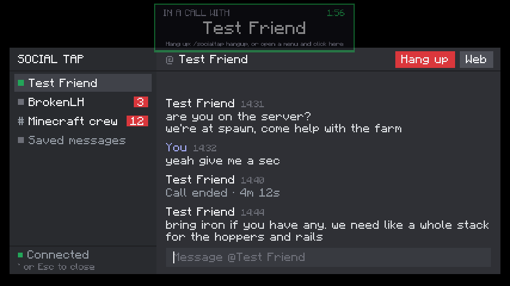

Answer calls, read and reply to messages, and see who you're talking to without leaving the game.
For Minecraft 26.3 with Fabric Loader and Fabric API.
Download for 26.3For Minecraft 26.2 with Fabric Loader and Fabric API.
Download for 26.2For Minecraft 1.21.4 with Fabric Loader and Fabric API.
Download for 1.21.4
Older builds are on the releases page.
Press ` or run /socialtap for your chats, unread counts, who's online, history and a message box.
Incoming calls pop up with a big Respond button. Start calls yourself, and talk through the mod's voice.
A 50% see-through box at the top shows who you're in a call with and for how long.
/respond <username> <message> replies without opening anything.
/socialtap obnoxious false moves messages to small cards in the top left that fade after 5 seconds.
Your Social Tap profile shows your Minecraft version, server and time played.
mods folder and start the game./socialtap login and sign in with your Social Tap account in the browser.